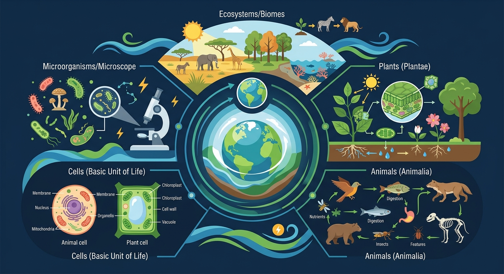

初一 · 生物 · 新概念从深海热泉到万米高空——生物圈的边界与奥秘
这节课的关键：生物圈 = 所有生物 + 它们赖以生存的环境，是地球上最大的生态系统。
下列哪项不属于生物圈的范围？
生物圈是地球上所有生物与其环境的总和，是最大的生态系统。它不是一个均匀的球壳，而是一个交叉的三层结构：
范围：海拔 0~15 km。主要生物：鸟类、昆虫、微生物（飞行/漂浮）。注意：高空没有永久居民，生物在此只是经过。
范围：海平面到约 11,000 m 深。主要生物：鱼、藻、浮游生物、深海生物。海洋面积占地球表面 71%，是生物圈最大的部分。
范围：陆地表面到地下约数米。主要生物：植物、动物、土壤微生物。这里是生物种类最丰富、数量最多的区域。
生物圈的厚度约 20 km——上到飞机飞行的高度，下到深海海沟。和地球直径（12,742 km）相比，生物圈就像苹果表面那层薄薄的果皮。
拖动滑块改变光照强度和水分，观察草地生态系统中植物、草食动物和肉食动物数量的变化。真实感受"环境影响生物"！
环境影响生物，生物也在适应和影响环境。这是双向的！
影响生物生活的非生物因素不包括——
"人间四月芳菲尽，山寺桃花始盛开"，这主要受哪种非生物因素影响？
亚马逊雨林被称为"地球之肺"。如果大面积砍伐雨林，可能产生的影响是——
📖 生态系统的组成——一片小池塘里有哪些成员？生产者、消费者、分解者各自扮演什么角色？食物链是怎么连起来的？
先独立作答，再点选项查看对错与错因。
生态瓶壁出现水珠的主要原因是
一周后苔藓变黄的根本原因是
该实验最能说明生物圈的哪一特点
生态瓶中能量流动的起点是____
答案：太阳光能
光合作用将光能转化为化学能
若想延长生态瓶存活时间，可在瓶内增加____植物以提高氧气产量
答案：水生
水生植物光合效率更高且能提供更多氧气
关于生物圈物质循环的正确叙述是
设计对比实验验证植物类型对生态瓶稳定性的影响
💡 大气成分变化如何影响宜居性。
外链：https://phet.colorado.edu/sims/html/greenhouse-effect/latest/greenhouse-effect_zh_CN.html
开放任务：用三步写出你如何向同学讲清「生物圈」。